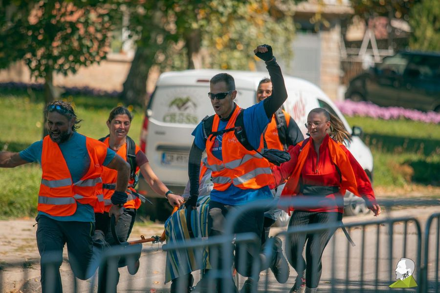

Ела и Ти в отборите в „По стъпките на Алеко с приятел“
Вече четири поредни години отборите на "Ела и ти" са част от голямото събитие #ПостъпкитенаАлекосприятел
И тази година два отбора с участник със затруднена и пълна неподвижност ще вземат участие
в състезанието “По стъпките на Алеко с приятел”, базирано на първото историческо изкачаване на Черни връх от Алеко Константинов с неговия приятел Никола Тантилов.
Участието предлага две възможности:
1. Отбор "Тегли-бутай", който финишира през 2023 с рекордното време от 2.40 ч. Екип от планински бегачи, гонещи подобряване на времето!
2. Отбор "Бързай бавно", който през 2023 г. финишира за 3.20 ч, подобрявайки времето си от предишната година. Екипът е сплотен, ентусиазиран и винаги успяващ.
За сформирането на екипите са необходими по 10 човека на една специализирана количка-носилка.
Заедно с приятел с пълна или частична неподвижност ще преминем през 11-километровото трасе /късо трасе Приятели/ - с. Владая - х. Панчо Томов - с. Владая
Ние сме звездите на състезанието и не оставаме незабелязани. Нека отново успеем да зарадваме нашите приятели, които сами няма как да се включат. Но заедно можем повече - да имаме една различна и силна емоция и да вкусим радостта от успеха на собствената си победа, най-вече над вътрешните труднопреодолими върхове.
Ела и ти - стани част от уникалните ни отбори и имай едно различно състезание, което ще ти подари незабравимо и вълнуващо преживяване, споделено с тези, които могат да го имат само с и чрез нас.
Пиши ни info@elaiti или се обади по телефона
Може и директно да подадеш заявка към нашия екип:
Отбори "Ела и ти"
Събитието се организира от фондация “Ела и Ти” като част от състезанието по планинско отборно бягане “По стъпките на Алеко с приятел“
КАУЗА - Нашият фокус е посещение на труднодостъпни места от хора в неравностойно положение.
Ако искате да ни подкрепите, може да го направите на
чрез epay на бутоните на elaiti.com
Други издания
